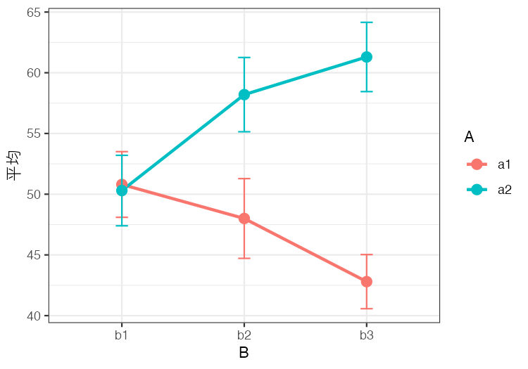

分散分析の仮想データをつくる関数 ANOVA_dataMaker.R
なにをするものか
分散分析の授業をしていると，「Aの主効果はあるけれど，Bの主効果と交互作用はない」といった，結果の形が決まった例題のデータが欲しくなります。乱数でそれらしいデータを作っても，たまたま有意にならなかったり，入れたつもりのない効果が有意になったりして，思いどおりの例題になかなか仕上がりません。
そこで，計画の型と効果の有無を指定すると，そのとおりの結果になる仮想データを作る関数をまとめました。もとは授業の例題を作るために書き散らしていたスクリプトで，それを関数の形に整え直したものです。
- 計画の型は ANOVA君(anovakun)の書き方(
"As"，"sAB"，"AsB"など)で指定します。3要因まで，群間・群内・混合計画のいずれにも対応しています。 - 各効果を
TRUE/FALSEで指定し，効果の大きさも決められます。 match = TRUEとすると，指定した効果だけが有意になり，それ以外は有意にならないデータになるまで乱数の種を探します。
入手と読み込み
ファイルは ANOVA_dataMaker.R からダウンロードできます。インターネットにつながっていれば，次のように直接読み込むこともできます。
source("https://kosugitti.github.io/notes/ANOVA_dataMaker.R")内部で pacman，dplyr，tidyr を使います。pacman が入っていなければ，先に install.packages("pacman") としておいてください。
使い方
データをつくる
たとえば，Aが群間要因(2水準)，Bが群内要因(3水準)の混合計画で，各群10人，Aの主効果と交互作用があり，Bの主効果はないデータを作るには，次のようにします。
dat <- make_anova_data("AsB", n = 10, levels = c(2, 3),
A = TRUE, B = FALSE, AB = TRUE,
match = TRUE, seed = 1)
head(dat) id A B value
1 1 a1 b1 52
2 1 a1 b2 47
3 1 a1 b3 38
4 2 a1 b1 37
5 2 a1 b2 52
6 2 a1 b3 431行に1つの測定値が入った縦長の形で返ってきます。このまま ggplot2 で図にしたり，aov や afex で分析したりできます。指定していない効果(ここでは B)は FALSE が既定なので，書かなくてもかまいません。
使った乱数の種は，データに属性として記録されています。授業資料にこの種を書いておけば，同じデータを作り直せます。
attr(dat, "seed")[1] 1効果を確かめる
anova_check() は，aov で分散分析をして各効果の \(p\) 値を返します。
anova_check(dat) A B AB
0.0090862252 0.4877032876 0.0003262894Aの主効果と交互作用だけが有意で，Bの主効果は有意でない，という指定どおりのデータになっています。図にすると，交互作用の形がよくわかります。

ANOVA君に渡す
format = "wide" とするか，縦長のデータを to_wide() に通すと，1行に1人の横長の形になります。これはANOVA君にそのまま渡せる形です。
wide <- to_wide(dat)
head(wide, 3) id A b1 b2 b3
1 1 a1 52 47 38
2 2 a1 37 52 43
3 3 a1 43 30 33anovakun(wide[, -1], "AsB", 2, 3)1列目の id を除いて渡すところに注意してください。群内要因が2つ以上あるときは，列名が a1_b1，a1_b2，… のようになり，最後の要因がいちばん速く変わる順に並びます。これもANOVA君が想定している並びです。
afex で分析する
縦長のデータは，afex の aov_ez() にもそのまま渡せます。
library(afex)
fit <- aov_ez(id = "id", dv = "value", data = dat,
between = "A", within = "B")
fitAnova Table (Type 3 tests)
Response: value
Effect df MSE F ges p.value
1 A 1, 18 155.15 8.54 ** .231 .009
2 B 1.91, 34.40 46.93 0.73 .015 .482
3 A:B 1.91, 34.40 46.93 10.12 *** .171 <.0013要因の場合
3要因でも書き方は同じです。効果の大きさは TRUE の代わりに数値で指定することもできます。次の例は，Cの主効果と，大きさ1.5の三次の交互作用だけがある3要因群間計画のデータです。
d3 <- make_anova_data("ABCs", n = 8, C = TRUE, ABC = 1.5,
match = TRUE, seed = 1)
round(anova_check(d3), 3) A B C AB AC BC ABC
0.696 0.444 0.000 0.716 0.777 0.638 0.000引数
make_anova_data() の引数は次のとおりです(カッコ内は既定値)。
| 引数 | 意味 |
|---|---|
design |
ANOVA君の型指定。s の左が群間要因，右が群内要因。要因は A〜C の3つまで。例: "As"，"sA"，"ABs"，"AsB"，"sAB"，"ABCs"，"ABsC"，"AsBC"，"sABC" |
n |
群間の各セルの参加者数。群間要因がない計画では全体の参加者数 (10) |
levels |
各要因の水準数を A, B, C の順に並べたベクトル (すべて2水準) |
A, B, C |
主効果の有無。TRUE なら es の大きさの効果を入れる。数値を書けばその大きさになる (FALSE) |
AB, AC, BC, ABC |
交互作用の有無。書き方は主効果と同じ (FALSE) |
es |
TRUE と書いた効果の大きさ。標準偏差 sigma を単位とする (0.8) |
mu |
全体平均 (50) |
sigma |
各測定値の標準偏差 (10) |
rho |
群内要因の測定値どうしの相関。大きいほど個人差が大きい (0.5) |
digits |
測定値を丸める小数点以下の桁数。0 なら整数 (0) |
format |
"long" は1行1測定値，"wide" は1行1人でANOVA君向き ("long") |
match |
TRUE なら，指定した効果だけが有意になるまで乱数の種を変える (FALSE) |
alpha |
match = TRUE のときの有意水準 (0.05) |
max_try |
match = TRUE のときに種を試す回数の上限 (1000) |
seed |
乱数の種。match = TRUE のときは探し始める種 (NULL) |
効果の入れ方
データは「全体平均 + 効果 + 個人差 + 誤差」として作っています。
- 主効果は，両端の水準の平均値の差が
es × sigmaになるように入れます。3水準以上のときは等間隔に並びます。 - 交互作用は交差型で入れます。2×2 なら，一方の要因の単純効果が，もう一方の要因の水準によって
+es × sigmaと-es × sigmaに分かれる形です。3水準以上の要因どうしでは「線形×線形」の形になるので，真ん中の水準には交互作用の効果が乗りません。 - 群内要因があるときは，参加者ごとの個人差を加えています。同じ参加者の測定値どうしの相関は
rhoになり，どの水準の組でも同じです。
注意
- 個人差は「どの水準の組でも相関が同じ」という形で作っているので，球面性の仮定はほぼ満たされます。球面性が破れたデータを作ることはできません。球面性の検定や補正を説明する例題には向きません。
match = TRUEは，補正をかけないaovの \(p\) 値で判定しています。ANOVA君やafexで Greenhouse-Geisser の補正をかけると，境目付近の効果では判定が変わることがあります。- 効果を小さくしたり人数を少なくしたりすると，条件に合うデータが見つからないことがあります。そのときは
nやesを大きくしてください。 - 作られるのはあくまで仮想データです。実際の研究のデータとして使うことはできません。